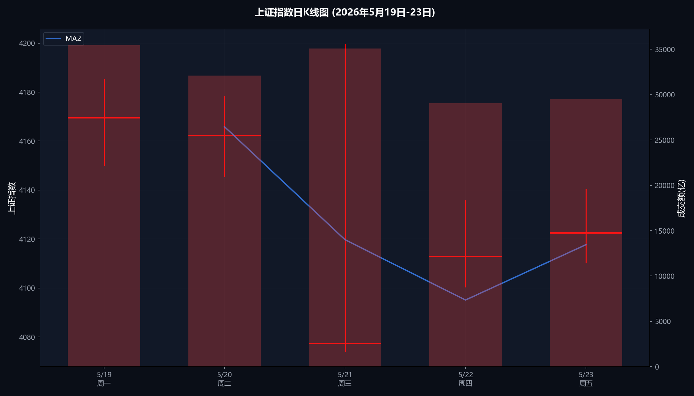
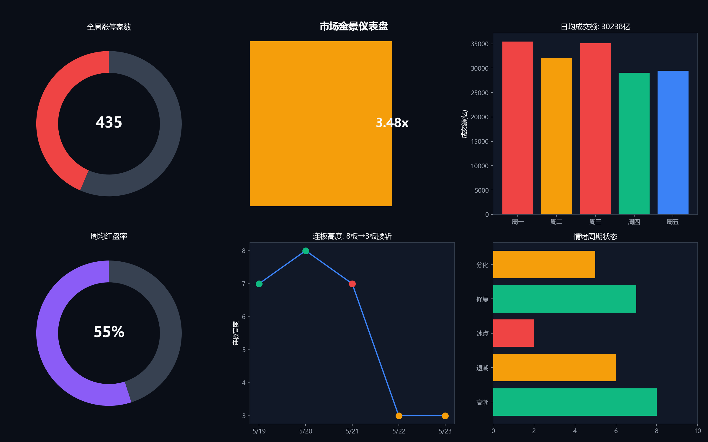
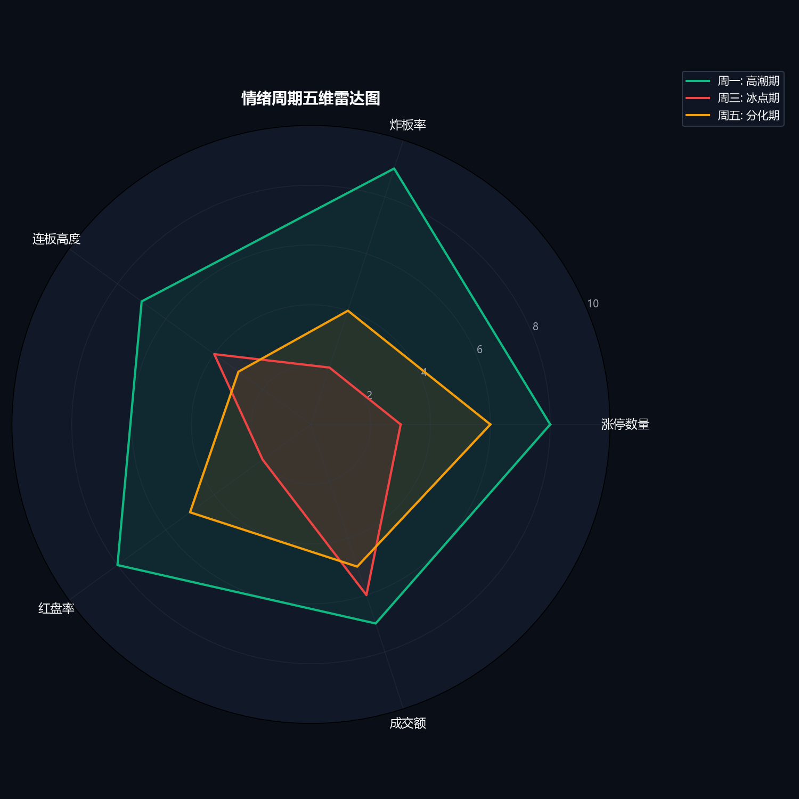
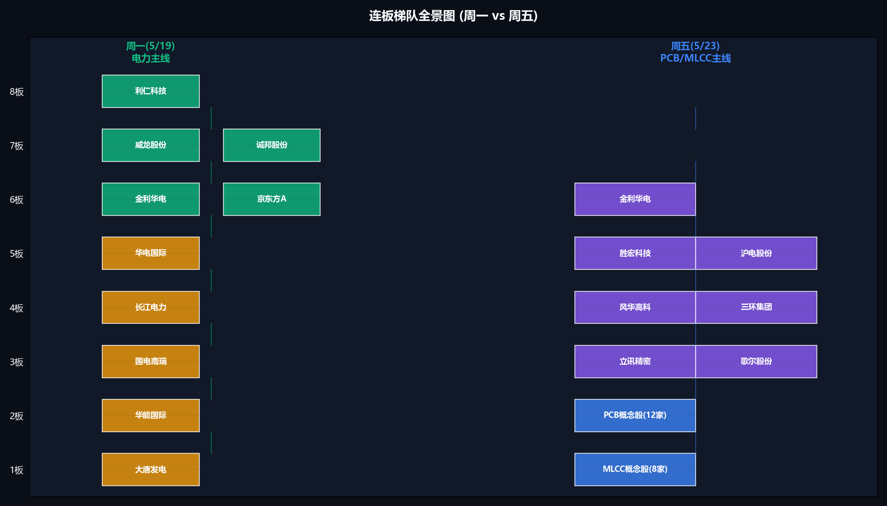
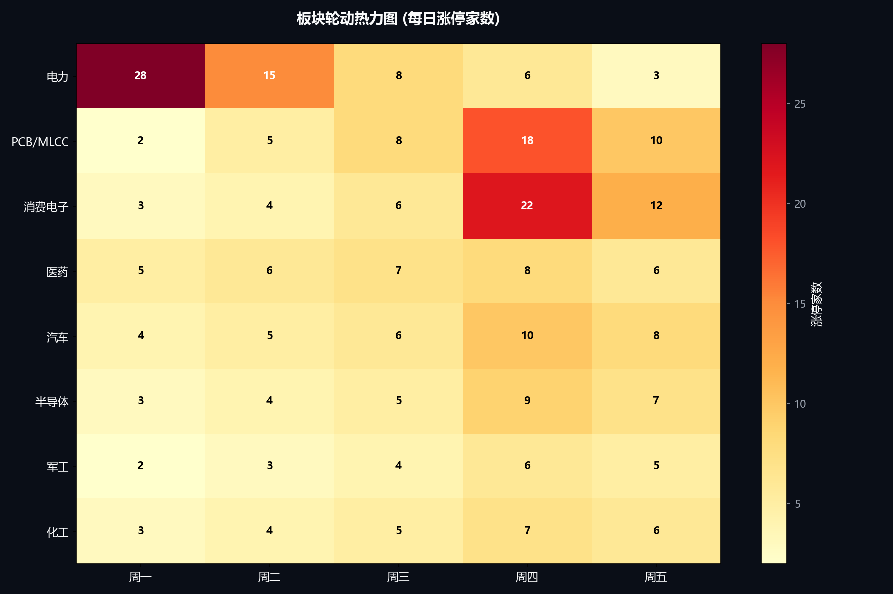
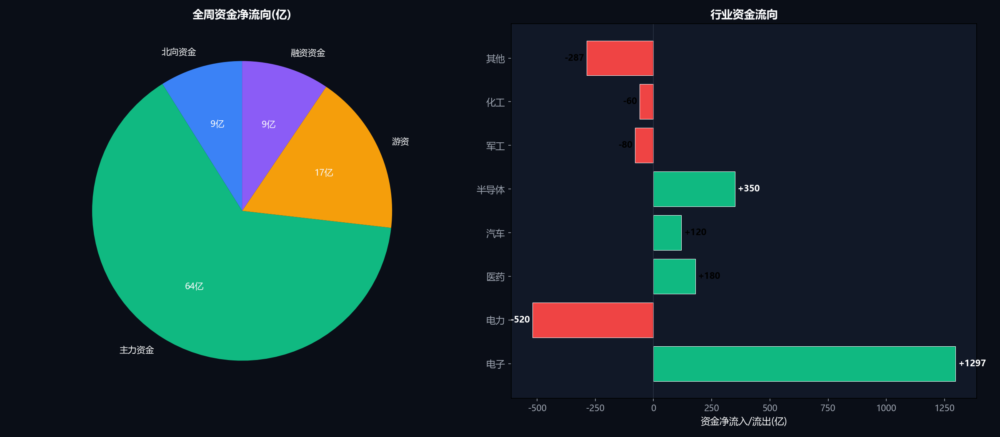
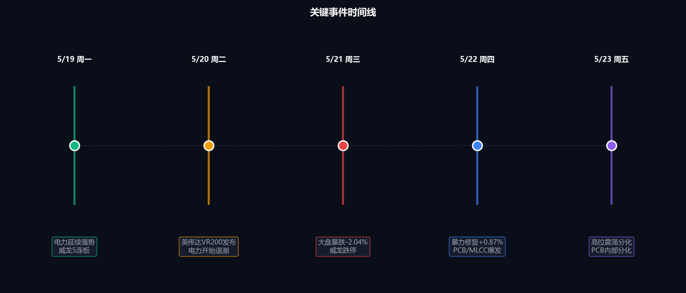
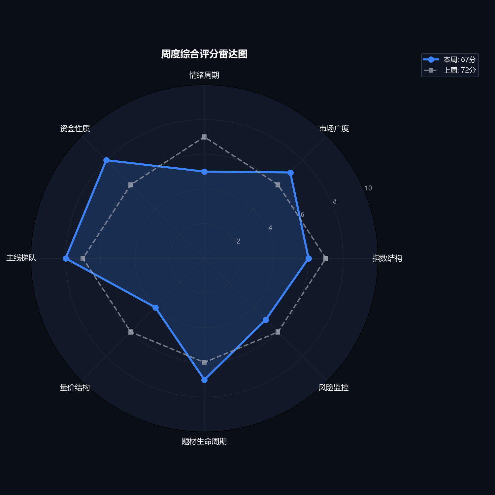

| 指数 | 周涨跌幅 | 收盘点位 | 周成交额(亿) |
|---|---|---|---|
| 上证指数 | -0.54% | 4122.50 | 152230 |
| 深证成指 | +0.23% | 15597.30 | 161747 |
| 创业板指 | +0.24% | 3938.50 | 79199 |
| 科创50 | +5.57% | 1790.77 | 16200 |


| 日期 | 情绪状态 | 连板高度 | 关键事件 |
|---|---|---|---|
| 5/19 周一 | 高潮 | 7板 | 电力延续强势，威龙5连板 |
| 5/20 周二 | 退潮 | 8板 | 英伟达VR200发布，电力退潮 |
| 5/21 周三 | 冰点 | 7板 | 大盘暴跌-2%，威龙跌停 |
| 5/22 周四 | 修复 | 3板 | 暴力修复+0.87%，PCB爆发 |
| 5/23 周五 | 分化 | 3板 | 高位震荡，PCB内部分化 |

| 日期 | 最高标 | 连板数 | 状态 | 次日表现 |
|---|---|---|---|---|
| 5/19 | 利仁科技 | 7板 | 强势 | 晋级8板 |
| 5/20 | 利仁科技 | 8板 | 高潮 | 断板 |
| 5/21 | 威龙股份 | 7板 | 崩塌 | 一字跌停 |
| 5/22 | 金利华电 | 3板 | 修复 | 晋级3板 |
| 5/23 | 金利华电 | 3板 | 分化 | — |
| 日期 | 涨停数 | 炸板数 | 炸板率 | 评估 |
|---|---|---|---|---|
| 5/19 | 123 | 13 | 10.6% | 优秀 |
| 5/20 | 69 | 19 | 27.5% | 危险 |
| 5/21 | 36 | 35 | 97.2% | 冰点 |
| 5/22 | 138 | 16 | 11.6% | 优秀 |
| 5/23 | 72 | 28 | 38.9% | 偏高 |
注: 炸板率超过20%为危险信号，超过30%为冰点特征。5月21日炸板率97.2%为极端冰点，次日迎来暴力修复。


| 资金类型 | 全周流向 | 主要方向 | 特征 |
|---|---|---|---|
| 北向资金 | 净流入180亿 | 深市中小盘 | 连续3日净流入 |
| 主力资金 | 电子+1297亿 | PCB/MLCC/消费电子 | 集中布局AI产业链 |
| 游资 | 电力→电子切换 | 高标切换 | 威龙踩踏出逃 |
| 融资资金 | 净买入191亿 | — | 连续7周净买入 |

偏正面。海外科技映射正面，产业催化集中在电子方向，但汇率和美元构成压力。

最令人担忧的信号: 成交额从周一35456亿逐日下降至周五29500亿(-16.8%)，周四在全年最低量能下录得最大涨幅——典型弱势信号。如果下周不能放量至34000亿+，反弹结构将面临重大挑战。
| 风险项 | 状态 | 级别 | 应对 |
|---|---|---|---|
| 缩量反弹 | 持续 | 高 | 关注下周初量能 |
| 高标崩塌 | 已发生 | 高 | 回避电力板块 |
| 美联储鹰派 | 潜在 | 中 | 关注周末海外市场 |
| 英伟达股价波动 | 潜在 | 中 | 影响PCB持续性 |
| 月末流动性 | 即将到来 | 中 | 5月末资金面收紧 |
震荡偏弱，防守反击。缩量反弹含金量不足，但新主线方向明确。
| 情景 | 触发条件 | 仓位 | 操作 |
|---|---|---|---|
| 放量主升 | 成交额 > 34000亿，PCB核心领涨 | 7成 | 加仓PCB/MLCC龙头 |
| 分化整理 | 成交额25000-34000亿 | 5成 | PCB底仓不动，汰弱留强 |
| 缩量阴跌 | 成交额 < 25000亿 | 3成 | 减仓PCB，保留龙头底仓 |
| 系统性风险 | 海外暴跌、北向大幅流出 | 1成 | 空仓观望 |
本周A股呈现典型的"旧主线崩塌、新主线崛起"的切换格局。电力板块在威龙股份8板→跌停的崩塌下全面退潮，英伟达VR200催化下的PCB/MLCC/消费电子接过主线接力棒，梯队完整、机构游资共振。
喜忧参半: 新方向逻辑硬、资金认可度高；但全周缩量反弹，成交额从35456亿逐日降至29500亿，周四最大阳线对应最小量能——量价背离严重。
下周核心变量只有两个: ①量能能否回到34000亿以上？②PCB方向分化后龙头能否确认？量能决定反弹高度，龙头决定方向持续性。4-5成仓位防守反击，量能不回归不加仓，龙头不确认不重仓。